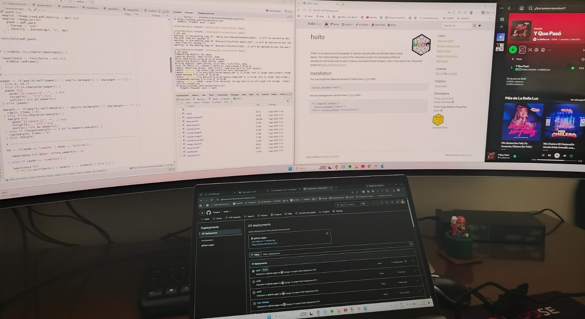

Programando entre cultivos 💻🌾

📋 El problema
Todo empezó con una hoja de cálculo llena de datos de campo que nadie sabía muy bien cómo aprovechar. Rendimientos, fechas de siembra, variables climáticas… información valiosa, pero desordenada 📊
🔧 La herramienta
Empecé con Python porque era lo que ya conocía un poco de los cursos de estadística. Con pandas para limpiar los datos y matplotlib para las primeras gráficas, el proyecto fue tomando forma poco a poco 🐍
🌱 Lo que aprendí
Que la agronomía y la programación no están tan alejadas como parecen. Ambas piden lo mismo: orden, paciencia y observar bien antes de sacar conclusiones. Ese fue el momento en que decidí seguir por este camino en serio
← Back to Blog